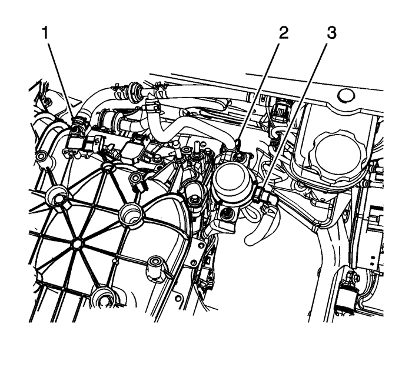
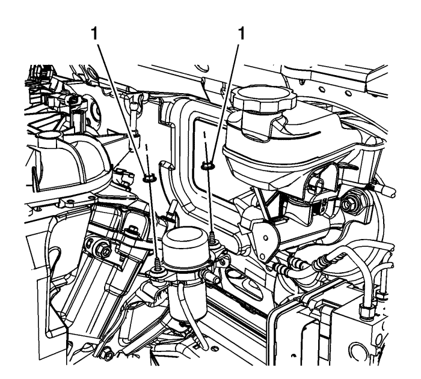
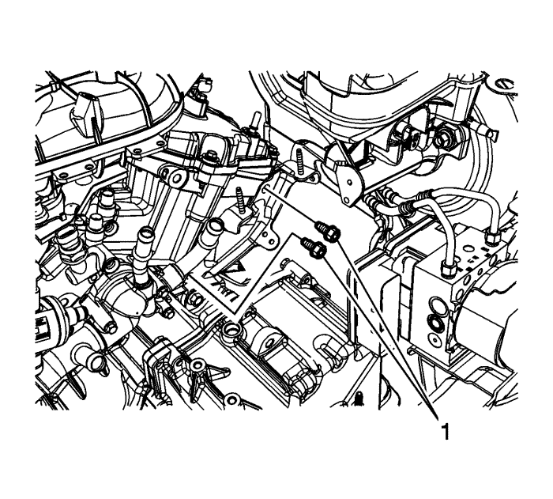
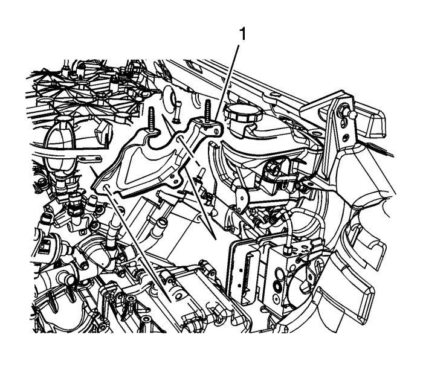

Captiva
Sustitución de la bomba auxiliar del servofreno
Procedimiento de desmontaje
Con el motor apagado, aplique y suelte varias veces el pedal de freno hasta que se obtenga una sensación de firmeza en el pedal y se agote por completo la reserva de vacío del servofreno de vacío.
Desmonte la cubierta del colector de admisión. Consultar
Sustitución de la cubierta del colector de admisión
.

Desacople la conexión rápida (3) del tubo flexible de depresión del servofreno.
Desacople el tubo flexible de depresión del servofreno de la grapa de fijación (2) de la bomba auxiliar del servofreno.
Desemborne el conector eléctrico de la bomba auxiliar del servofreno.
Desmonte el soporte del conector eléctrico de la bomba auxiliar del servofreno del soporte de la bomba.

Desmonte las tuercas (1) de la bomba auxiliar del servofreno y retire la bomba auxiliar del servofreno.

Si desmonta el soporte de la bomba auxiliar del servofreno, desmonte también los tornillos (1) del soporte de la bomba auxiliar del servofreno.

Desmonte el soporte (1) de la bomba auxiliar del servofreno.
Procedimiento de montaje
Monte el soporte (1) de la bomba auxiliar del servofreno, si se ha desmontado previamente.
Precaución:
Consulte
Precaución con las fijaciones
en la sección Prólogo.
Monte los tornillos (1) del soporte de la bomba auxiliar del servofreno y apriételos a un par de
50 N·m (37 lb. pie)
.
Monte la bomba auxiliar del servofreno.
Monte las tuercas (1) de la bomba auxiliar del servofreno y apriételas a un par de
9 N·m (80 lb. pulg.)
.
Acople la conexión rápida (3) del tubo flexible de depresión del servofreno.
Acople el tubo flexible de depresión del servofreno a la grapa de fijación (2) de la bomba auxiliar del servofreno.
Acople el soporte del conector eléctrico de la bomba auxiliar del servofreno al soporte de la bomba.
Emborne el conector eléctrico de la bomba auxiliar del servofreno.
Monte la cubierta del colector de admisión . Consultar
Sustitución de la cubierta del colector de admisión
.
© Copyright Chevrolet Europe. All rights reserved